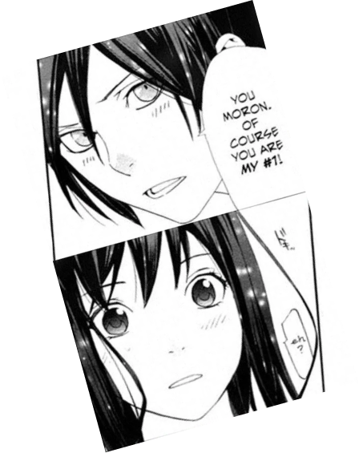

С днём рождения тебя, Танечка!
Поздравляю тебя, Таня!
От всего сердца желаю тебе крепкого здоровья, миллион тёплых, ярких и полных жизни дней в окружении самых лучших, верных и достойных людей в своей долгой жизни. Пусть, все твои сокровенные мечты сбываются, а цели, стоящие перед тобой поражают всех масштабами, но всё равно достигаются благодаря твоим усилиям.
От всего сердца желаю тебе крепкого здоровья, миллион тёплых, ярких и полных жизни дней в окружении самых лучших, верных и достойных людей в своей долгой жизни. Пусть, все твои сокровенные мечты сбываются, а цели, стоящие перед тобой поражают всех масштабами, но всё равно достигаются благодаря твоим усилиям.
У тебя же день рождения, милашка!
Желаю тебе получать веселье и счастье, не меньше того, что ты даришь всем вокруг (в частности, мне с Матвеем. Матвей говорил, что не может смотреть на тебя без улыбки и я прекрасно понимаю его). Продолжай так же звонко смеяться по пустякам (и не только). Желаю, чтоб твоя жизнь складывалась так, как будет лучше именно тебе (естественно, трудности никто не отменял, но ты обязательно со всем справишься!). Пусть, твоя ослепительная улыбка сияет на твоем милейшем личике как можно чаще, а радостный смех заливает всё вокруг.
Пусть твои невооброзимые образы когда-нибудь покарят мир, ведь рядом с ними не стоит ни один образ самых искусных модельеров, а если ты не хочешь этого, пусть они будут радовать близких тебе людей. Но твои прически... Я не могу, это такое прекрасное искусство, что не подвластно ни одной душе.
Пусть твои невооброзимые образы когда-нибудь покарят мир, ведь рядом с ними не стоит ни один образ самых искусных модельеров, а если ты не хочешь этого, пусть они будут радовать близких тебе людей. Но твои прически... Я не могу, это такое прекрасное искусство, что не подвластно ни одной душе.

На самом деле, то, как ты мыслишь - это очень круто. Мои одногруппники - дети, в сравнении с тобой. Твои слова на ораторстве, что людям нужно разговаривать... Как же я был поражён от этих слов, потому что я когда-то услышал нечто подобное на интервью от Павла Воли и был искренне удивлён, что я не знал человека, который считал бы так же, но тут появилась ты. Я не верю, что между нами 3 года разницы.
АХАХАХАХАХАХАХАХАХ!
Начинается самая большая часть, удачи тебе прочитать всё!
Спасибо тебе, что ты есть, Таня и ты такая, какая ты есть. Я тебя невероятно сильно люблю.
Как же я благодарен миру, что когда-то мы поработали день, потому что это был лучший день смены для детей, да и для меня, так как было очень весело и тепло, ведь ты приносишь веселье просто своим присутствием.
А теперь, о смене, где ты была вожиком.
Я бесконечно благодарен тебе за неё. Я никак не смогу найти таких слов, которые смогут описать и 10% того, как я благодарен тебе за всё, что ты делала на протяжении это смены. Я никогда даже представить не мог, что найдётся такой человек, как ты. Ты самая-самая заботливая по отношению ко мне из всех, кого я знаю, за исключением родителей. Вторым идёт Матвей. Он волнуется словами, но ты... Боже, от момента с тем, как ты застелила мне постель, я до сих пор чувствую себя, как на этом ВИДЕО. И от того, как Даша сказала, что ты несёшь мне полдник я, блин, готов был в окно прыгать. Я искренне хотел сделать тебе нечто подобное, но единственное, что я смог - сложить твои вещи в холе, и как же мне стыдно, что это единственное, что я сделал. По моим ощущениям, у меня тогда плохо получилось передать всё, что я испытал, поэтому читай об этом сейчас. Спасибо тебе за твою поддержку, тепло и твои волнения за меня, за то, что слушала мои занудные рассказы об аниме, за совместный просмотр “Тетради смерти”. Даже сейчас я понимаю, что не могу описать всё, что хочу сказать, потому что не знаю, как это сделать. Спасибо тебе, что пробудила во мне нечто забытое, что так долго было в забвении.

Начинается самая большая часть, удачи тебе прочитать всё!
Спасибо тебе, что ты есть, Таня и ты такая, какая ты есть. Я тебя невероятно сильно люблю.
Как же я благодарен миру, что когда-то мы поработали день, потому что это был лучший день смены для детей, да и для меня, так как было очень весело и тепло, ведь ты приносишь веселье просто своим присутствием.
А теперь, о смене, где ты была вожиком.
Я бесконечно благодарен тебе за неё. Я никак не смогу найти таких слов, которые смогут описать и 10% того, как я благодарен тебе за всё, что ты делала на протяжении это смены. Я никогда даже представить не мог, что найдётся такой человек, как ты. Ты самая-самая заботливая по отношению ко мне из всех, кого я знаю, за исключением родителей. Вторым идёт Матвей. Он волнуется словами, но ты... Боже, от момента с тем, как ты застелила мне постель, я до сих пор чувствую себя, как на этом ВИДЕО. И от того, как Даша сказала, что ты несёшь мне полдник я, блин, готов был в окно прыгать. Я искренне хотел сделать тебе нечто подобное, но единственное, что я смог - сложить твои вещи в холе, и как же мне стыдно, что это единственное, что я сделал. По моим ощущениям, у меня тогда плохо получилось передать всё, что я испытал, поэтому читай об этом сейчас. Спасибо тебе за твою поддержку, тепло и твои волнения за меня, за то, что слушала мои занудные рассказы об аниме, за совместный просмотр “Тетради смерти”. Даже сейчас я понимаю, что не могу описать всё, что хочу сказать, потому что не знаю, как это сделать. Спасибо тебе, что пробудила во мне нечто забытое, что так долго было в забвении.
Скорее всего, я крайне сильно переборщил, ведь теперь на кону стоит наше с тобой общение, но я уже не мог держать это всё в себе, а в конверт пошла лишь малая часть. Но вот, я высказался и ни о чём не жалею.
Я неописуемо сильно тебя люблю всеми фибрами души и поздравляю с днём рождения, Таняш!
Я неописуемо сильно тебя люблю всеми фибрами души и поздравляю с днём рождения, Таняш!